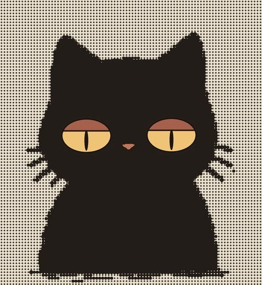
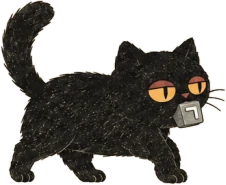

경성야록 식자실에서 한글 공부 부록의 자모표에 들어갈 낱자 활자 하나가 없어졌다. 없어진 것은 「ㄱ」. 가져간 것은 편집국을 제 집처럼 드나들던 까만 고양이로, 몸은 통통하고 눈은 꿀빛이며 언제나 표정이 없다. 기자들은 그를 그냥 「어이, 그 까만 것」이라 불렀다. 분한 편집국은 오늘 이 호외의 ㄱ 자리를 모두 비워 두기로 하였다. 고양이를 보신 분은 본사로 엽서를 보내 주시라.
